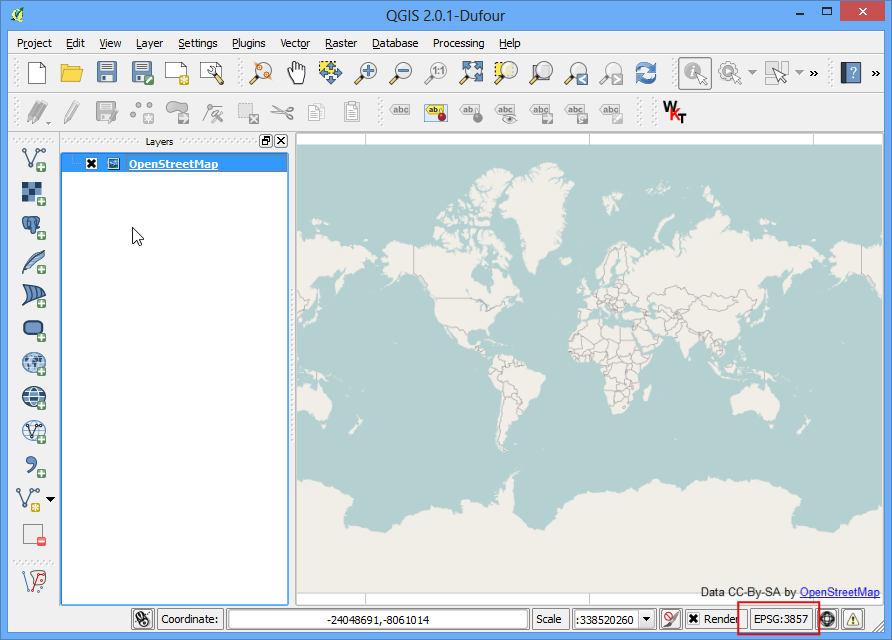
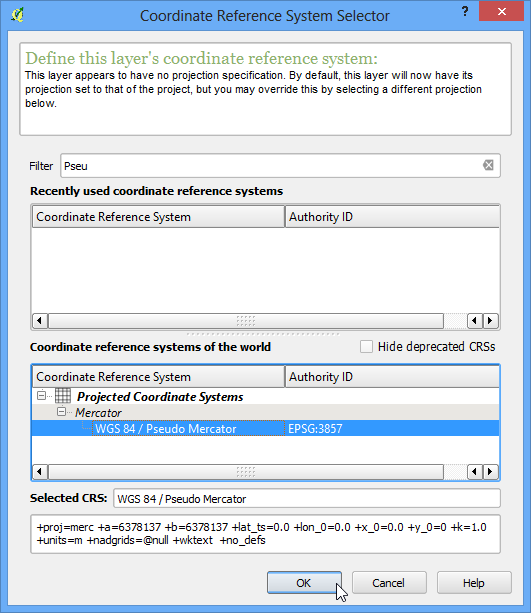

Geo-verwijzingen voor satellietbeelden
[ Download PDF A4
Letter ]
In de handleiding Georeferencing Topo Sheets and Scanned Maps behandelden wij het basisproces voor geo-verwijzingen in QGIS. Die methode omvatte het lezen van de coördinaten van uw gescande kaart en die handmatig invoeren. U zult echter in veel gevallen geen coördinaten hebben afgedrukt op uw kaart, of u probeert een afbeelding te voorzien van geo-verwijzingen. In dat geval kunt u een andere gegevensbron voor geo-verwijzingen voor uw invoer gebruiken. In deze handleiding zult u leren hoe u bestaande vrije gegevensbronnen kunt gebruiken in uw proces voor geo-verwijzingen.
Overzicht van de taak
We zullen geo-verwijzingen toevoegen aan hoge resolutie ballon-afbeeldingen met behulp van coördinaten voor de verwijzing vanuit OpenStreetMap.
Andere vaardigheden die u zult leren
Downloaden van geweldige hoge-resolutie afbeeldingen uit het publieke domein.
Gebruiken van de plug-in OpenLayers in QGIS.
Converteren van coördinaten tussen verschilende projecties met behulp van het programma voor de opdrachtregel cs2cs.
gebruiken van een bestaande laag met geo-verwijzingen om GCP-punten in te voeren in het programma Georeferencer.
Instelling van een aangepaste waarde Geen-gegevens voor een laag.
De gegevens ophalen
In deze handleiding zullen we enkele fantastische vlieger- en ballonafbeeldingen gebruiken die zijn verzameld door The Public Laboratory. Zij stellen de versies met geo-verwijzingen ook beschikbaar, maar wij zullen een JPG-afbeelding zonder geo-verwijzingen downloaden en daar door het proces voor geo-verwijzingen in QGIS gaan. Indien u de afbeeldingen die zij beschikbaar stellen mooi vindt kunt u ze verkennen ook in Google Earth.
Download de JPG-afbeelding van het Washington Square Park, New York. U kunt met rechts klikken op de knop JPG en dan kiezen voor Koppeling opslaan als....
Procedure
Voor deze handleiding zullen we de laag OpenStreetMap gebruiken als onze laag voor de verwijzingen. Installeer de plug-in OpenLayers via . Bekijk Using Plugins voor meer informatie over het gebruiken van plug-ins in QGIS.

Eenmaal geïnstalleerd, ga naar . Dit zal een laag toevoegen van vooraf gerenderde tegels die zijn gemaakt uit gegevens van OpenStreetMap.

Nu heeft u de laag OpenStreetMap geladen in QGIS. Let op het Coordinate Reference System (CRS) voor deze laag. Die is ingesteld als EPSG 3857 Pseudo Mercator. Het is belangrijk om dit te onthouden, omdat de coördinaten die we uit deze laag gebruiken in dit CRS zijn.

Nu is het zaak om de algemene omgeving van het gebied dat we proberen te voorzien van geo-verwijzingen te lokaliseren. U kunt eenvoudigweg de gereedschappen Pannen en Zoomen gebruiken om dat gebied op de laag OpenStreetMap te lokaliseren. Maar we kunnen deze gelegenheid te baat nemen om een ander gereedschap te demonstreren dat u in de toekomst kan helpen. We weten dat de afbeelding die we hebben gedownload is voor het Washington Square Park in New York. Als u zoekt naar die plaats, zult u in staat zijn om de pagina op Wikipedia daar voor te lokaliseren. De coördinaten voor het park zijn daarop vermeld.

U zult opmerken dat de coördinaten in graden/minuten/seconden zijn en breedtegraad en lengtegraad zijn. Maar omdat uw laag in de Mercator-projectie is, hebben we Mercator-coördinaten nodig om het park te lokaliseren. Hier komt het programma voor de opdrachtregel, genaamd cs2cs van pas. Als u QGIS installeerde vanuit het installatieprogramma OSGeo4W, zult u het al hebben geïnstalleerd op uw systeem. Ook op Linux en Mac wordt het tegelijkertijd geïnstalleerd met QGIS. Start een terminal-venster en typ cs2cs om te controleren of het beschikbaar is. gebruikers van Windows vinden het terminal-scherm onder .

Als u eenmaal heeft geverifieerd dat het programma cs2cs op uw systeem bestaat, is tijd om onze Breedte- en Lengtegraad te converteren naar Mercator-coördinaten. De manier waarop dit programma werkt is dat u een CRS voor de source en de destination moet specificeren. De definitie voor het CRS zou een tekenreeks voor PROJ4 of een EPSG-code kunnen zijn. Omdat we de EPSG-code voor ons CRS voor invoer en uitvoer al kennen, zullen we die gebruiken. De eenvoudigste manier om het programma te gebruiken is om de coördinaten voor de invoer op de opdrachtregel zelf in te geven. Onthoud dathet programma de coördinaten accepteert in de volgorde X Y, dus moeten invoeren Lengtegraad Breedtegraad. Voer de volgende opdracht in in het scherm en druk op Enter. Onthoud dat we de aanhalingstekens (”) moeten laten voorafgaan door een backslash (\). Nadat u op Enter heeft gedrukt, zult u zien dat het programma de coördinaten verwerkt en de uitvcoer-coördinaten X Y afdrukt in CRS EPSG 3857 .
echo "-73d59'51\" 40d43'51\"" | cs2cs +init=EPSG:4326 +to +init=EPSG:3857
-8237364.02 4972720.34 0.00

Kopieer deze coördinaten en schakel over naar QGIS. Onder in het venster van QGIS zult u een tekstvak zien staan dat Coördinaat heet. Voer de coördinaten daar in in de vorm X,Y. Druk op Enter. U zult zien dat de kaart een stukje verschuift, maar niet inzoomt., Selecteer de schaal 1:2500 uit het keuzemenu Schaal naast het vak Coördinaat en druk op Enter om naar het gebied te zoomen.

Voila! U ziet nu het gebied Washington Square Park in uw werkgebied. Nu is het tijd om te beginnen met de geo-verwijzingen. Start de Georeferencer via . Als u dat menu-item niet ziet, dient u de plug-in Georeferencer GDAL via in te schakelen.

Ga, in het venster Georeferencer, naar . Navigeer naar het gedownloade JPG-bestand en klik op Openen.

In Coordinate Reference System Selector, kies EPSG:3857 Pseudo Mercator

Klik nu op de knop Punt toevoegen op de werkbalk en selecteer een eenvoudig te identificeren locatie in de afbeelding. Hoeken, kruispunten, palen etc. zijn goede controlepunten.

Als u eenmaal op een locatie van een controlepunt in de fabeelding heeft geklikt, zult u een pop-up zien die u vraagt kaartcoördinaten in te vullen. Klik op de knop Van kaartvenster.

Zoek dezelfde locatie op in de laag voor verwijzingen, d.i. de laag OpenStreetMap en klik daar. De coördinaten worden automatisch ingevuld vanuit de klik in het kaartvenster Klik op OK. Kies op dezelfde wijze nog tenminste 4 punten in de afbeelding en voeg hun coördinaten toe vanuit de laag voor verwijzingen.

Ga nu naar

Kies de instelling zoals hieronder weergegeven. Zorg er voor dat u het vak Na afloop laden in QGIS heeft geselecteerd. Klik op OK. Terug in het venster Georeferencer, ga naar . Dit zal het proces starten van het kromtrekken van de fabeelding met behulp van de GCP’s en het doelraster maken.

Als het proces is voltooid, zult u de laag met geo-verwijzingen geladen zien in QGIS. Als alles goed is gegaan zult u het netjes over de laag OpenStreetMap zien liggen.

Laten we, om de uitvoer er netter uit te laten zien, de zwart-witte waarden met geen gegevens verwijderen. Klik met rechts op de afbeeldingslaag en kies Eigenschappen.

Schakel naar de tab Transparantie. We willen aangeven dat zwarte of witte pixels in de afbeelding waarden zijn met No data en transparant zouden moeten worden gemaakt. Voer 0 in als de waarde voor No data. Klik ook, in de Aangepaste transparantie opties, op de knop + en voer 255 in als de transparante pixels voor elke band en voer 100 in als :Percentage transparant. Klik op OK.

Nu zult u uw afbeelding met geo-verwijzingen netjes over de basislaag zien liggen.